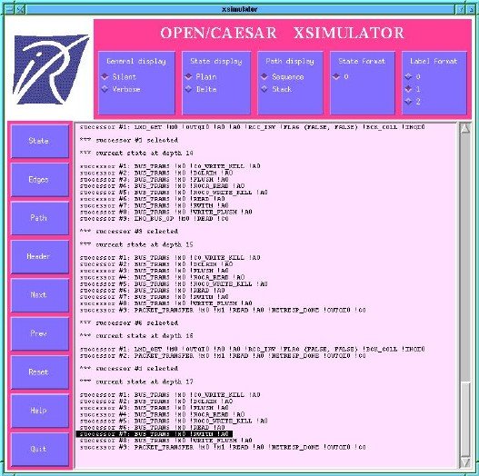

Table of Contents
xsimulator - interactive simulator with X-windows interface
The xsimulator tool is a small, simple simulator with very limited capabilities.
It is only available on Unix systems and cannot be ported to Windows easily.
It is advised to migrate to the ocis
simulation tool, which provides
advanced capabilities and is available for both Unix and Windows platforms.
bcg_open [bcg_opt] spec[.bcg] [cc_opt] xsimulator
or:
exp.open [exp_opt]
spec[.exp] [cc_opt] xsimulator
or:
fsp.open [fsp_opt] spec[.lts] [cc_opt]
xsimulator
or:
lnt.open [lnt_opt] spec[.lnt] [cc_opt] xsimulator
or:
lotos.open
[lotos_opt] spec[.lotos] [cc_opt] xsimulator
or:
seq.open [seq_opt] spec[.seq]
[cc_opt] xsimulator
This program provides interactive simulation
for the BCG graph spec.bcg, the composition expression spec.exp, the FSP
program spec.lts, the LNT program spec.lnt, the LOTOS program spec.lotos,
or the sequence file spec.seq.
A stack is used to maintain the execution
sequence starting from the initial state and leading to the current state,
thus making backtrack possible.
The list of available commands can be obtained
by clicking on the "help" button.

The Xsimulator window
The options bcg_opt, if any, are passed to
bcg_lib
.
The options exp_opt, if any, are passed to exp.open
.
The options fsp_opt, if any, are passed to fsp.open
.
The options lnt_opt,
if any, are passed to lnt.open
.
The options lotos_opt, if any, are
passed to caesar
and to caesar.adt
.
The options seq_opt, if
any, are passed to seq.open
.
The options cc_opt, if any, are passed
to the C compiler.
Exit status is 0 if everything is alright,
1 otherwise.
When the source is erroneous, error messages are
issued.
Version 1.* of Xsimulator was developed using the X11 library
by Frederic Rocheteau and Hubert Garavel (INRIA Rhone-Alpes). This version
is no longer distributed.
Version 2.* of Xsimulator was developed by Mark
Jorgensen, and further improved by Jean-Michel Frume and Hubert Garavel.
- spec.bcg
- BCG graph (input)
- spec.exp
- network of communicating LTSs
(input)
- spec.lts
- FSP specification (input)
- spec.lnt
- LNT specification (input)
- spec.lotos
- LOTOS specification (input)
- spec.seq
- sequence file (input)
The
binary code of this tool is available in file $CADP/bin.`arch`/xsimulator.a
OPEN/CAESAR Reference Manual, bcg
, bcg_open
, caesar
,
caesar.adt
, exp
, exp.open
, fsp.open
, lnt.open
,
lotos
, lotos.open
, ocis
, seq
, seq.open
Additional information is available from the CADP Web page located at http://cadp.inria.fr
Directives for installation are given in files $CADP/INSTALLATION_*.
Recent
changes and improvements to this software are reported and commented in
file $CADP/HISTORY.
Please report new bugs to Hubert.Garavel@inria.fr
Table of Contents